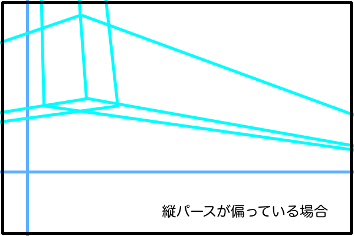
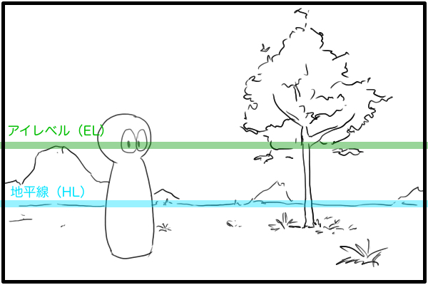
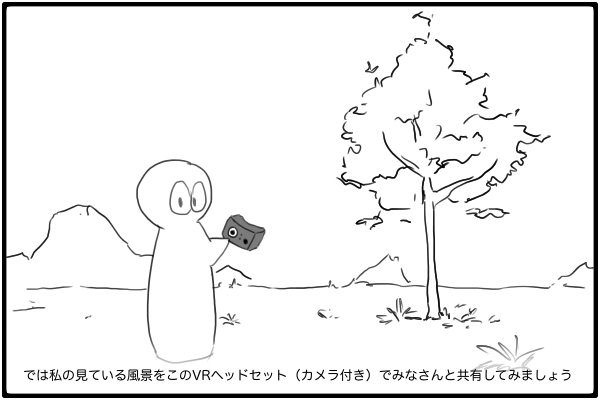
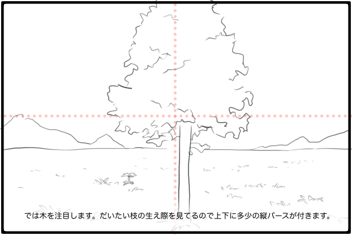
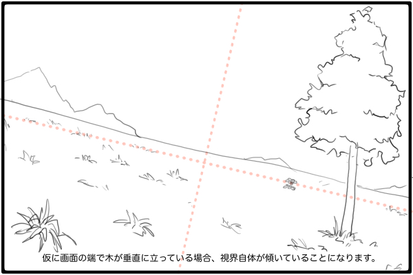

縦パースにおけるアイレベル的な縦線はあるのか？
今回考えるのは縦パースの傾きということですが、どういう意味かというと、縦パースの傾きが収束する点がどの位置にあるかということです。つまり縦方向の消失点を画面内の水平方向のどの辺りに設定すべきかということです。二点透視の消失点が画面内の垂直方向のどの辺りに設定するかについては、アイレベルという概念があるため明確な意図を持って決定できていました。では三点透視の縦パースにはアイレベルと同じような概念はあるのか、ということになります。


視中心とアイレベルが一致しないときが3点透視図法
ではまず、アイレベルというものはどういうものだったか思い出しましょう。アイレベルは観測者が風景を見ているとき、観測者の視線が収束する高さのことで、簡単に言えば観測者が見ている方向の無限遠の彼方に水平線を引いたものということができます。以前の記事でも何度も説明していますが、お絵描きホーホー論では水平線と地平線を使い分けていることを念頭に置いてこの記事を読んでください。
話を戻して、観測者が見ている方向ということは、観測者が認識しようとしている対象が存在する位置ということになります。観測者は何かを見ようとしてその方向に視線を向けています。二点透視図法で作図をするときに描くアイレベルは、便宜上、観測者が地平線を見つめているということを前提に作図していることにも注意してください。その観測者に意思があって目の前にある立方体を見つめた場合、その観測者が認識する風景は2つの視円錐を重ねて三点透視パース作画 〜建築パースとリアルパースの違い〜の記事で提唱した「視界の視円錐」によって作図されます。
アイレベルは観測者が見つめている点、つまり視心に一致しているということを覚えておいてください。このように、観測者が見つめている点と、遥か彼方にある地平線が一致していないとき、視界の視円錐のアイレベルと空間の視円錐のアイレベルは別々に存在します。

垂直方向の真ん中を決める「注視点」
それでは、三点透視の縦パースにもアイレベルのような概念がないか考えていきます。ここで参考になるToggeterのまとめを紹介します。こちらはアニメーターの山門さんのTwitterのパース講座をまとめられたものですが、そこで「注視点」という面白い概念が解説されています（残念ながらこのツイートは現在非公開になっているので画像を見る事ができません）。
注視点というのは、その名の通り「視線を注ぐ点」です。つまり、風景の中で観察者が注目している部分のことです。別の表現だと「視線が行き着く点」とも言えます。この「注視点」によく似た概念として「視心」があります。一般的なパース理論において視心とは視円錐の中心点のことでした。観測者が見ている視界を作図するために用いる「視界の視円錐」の視心はすなわち注視点であると言ってもさしつかえないでしょう。
以下、紹介したToggetterでされていた説明を思い出しつつ再現していきます。山門さんは学校のイスをモデルにして、一点透視図法の消失点の位置の設定の仕方を解説していた気がします。よくある間違いとして、消失点が画面の端に偏っている描き方について指摘していました。まず、画面左側に位置する「正面を向いている」イスの奥行きが、画面左側に設定された消失点に収束する画を示し、画面左側にある「正面を向いている」イスの左側面が見えないのは空間的におかしいという問題を提起します。

そして、なぜこのような絵を描いてしまうかというと、透視図法というパース技法の上だけで空間を捉えていて、人間が見ているという感覚がスッポリと抜け落ちていると説明。そのときの人間が見ているという感覚というものを「注視点」という概念で再現できる、ということでした。ここで言っている「正面を向いている」イスの奥行きが見えない状態の絵を描きたい時は、そのイスは画面中央に位置し、画面中央の消失点に収束しているべきです。もし「正面を向いている」イスの奥行きが見えない状態なのに画面の端の方にあった場合、それは「正面を向いている」のではなくて「観測者の方を向いている」ということになります。

観測者視点に立って考えて見る
では、注目している点に水平線を描いたものとしてのアイレベルと同じように垂直線も描いてみましょう。この水平線と垂直線は視界の視円錐を表すカーソルのようなもので、この2本の線が交わる点が視心、すなわち注視点です。また、注目する被写体が観測者からどれくらいの距離の位置にいるかによって画角も変化します。なぜかというと、その被写体にピントが合うように眼球の毛様体が水晶体の厚さを調節することで焦点距離を調節しているからです。まとめると、注視点（視心）に一致する水平線と垂直線を描いたものが視界の視円錐、ということです。そして、二点透視の横パースを作図するときにアイレベルを基準にしていたのと同じように、先ほど描いた垂直線を縦パースの基準にすればいいのです。つまり、リアルに近いパースで絵を描くということは、「人間が見る」ことの再現を目的とした「視界の視円錐」を使ったパース作画をするということで、三点透視の縦パースは「画面の中央」に垂直線が位置するように描けばいいということになります。




※ この記事を書いた時点ではまだ理解していませんでしたが、視線と木が直角に交わっている限り縦パースは発生しません。木を見上げたりすれば縦パースは発生します。

こう考えると、「空間の視円錐」と「視界の視円錐」に分けてパースを作画するアイデアは可能性があるような気がしてきました。空間の視円錐では、立体の存在する世界の空間を定義する。視界の視円錐では、世界に存在する立体の向きを定義する。お互いに深く関係しあっているというわけですね。そして、「人間が見ている」ことを再現するには「視界の視円錐」の視心（注視点）を画面中央に設定して三点透視図法で作画する。映像演出などで情緒的なカットにしたいなら、「空間の視円錐」を使ってカメラで撮影しているような客観的な二点透視図法で作画する。
「人が見ること」はすなわち「人に見せる」ための画作り
余談ですが、映像演出では台詞を言っている人物が画面の端に立っていたり、ときには画面外にいることがあります。この場合は、主人公が注目している対象が画面の中央に位置することより、その映像を鑑賞している人に何を注目させるかを重視します。例えば、情緒的な雰囲気をだしたい場合は風景をゆっくり映しながら画面から台詞が聞こえてくるという映像を見せるようにします。ですので、演出意図によってはリアルなパース作画をしていなくてもリアルな雰囲気を出している場合もあるということを覚えておいてください。演出ができるようになるのはかなり上級者になってからです。頑張って到達したいものです。